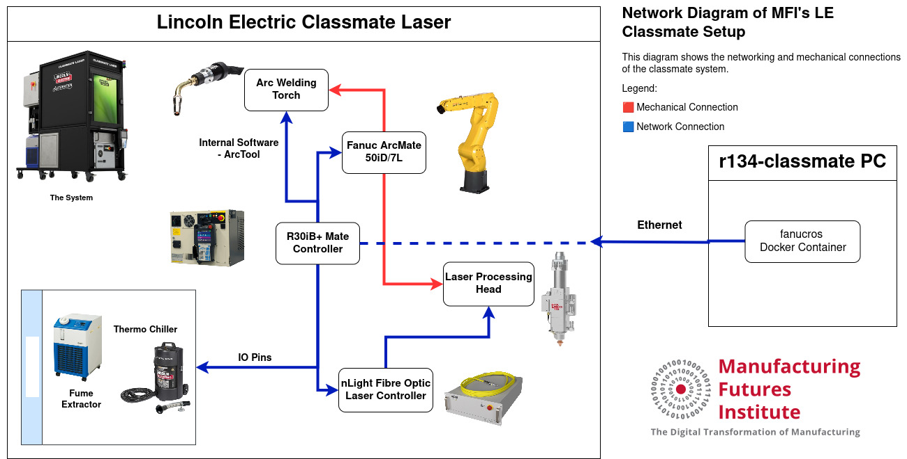
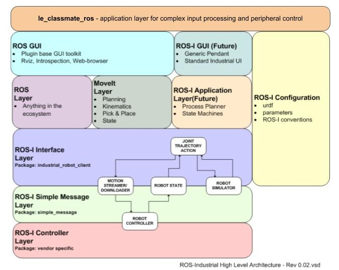

Robot Welding - LE Classmate
The Lincoln Electric Classmate Laser is a compact, all-in-one laser welding cell designed specifically for educational environments to train students in advanced laser welding technologies. It features integrated laser and robotic technology on a mobile cart, along with an arc welding torch.
The network diagram for the setup at MFI is shown below:

The LE Classmate is capable of producing additively manufactured parts. A video showing the classmate using this ROS package to write out the letter ‘MFI’ is shown below.
Software Architecture
The le_classmate_ros package is an application software to handle peripheral control and process complex inputs. In the standard ROS-I architecture, it will be the top abstracted layer as shown.

le_classmate_ros Package
This package provides a ROS-compatible control layer for a Fanuc-driven Lincoln Electric Classmate welding cell. It enables service-based control of welding operations via comet_rpc, conversion of CAD geometries into robot trajectories, and execution of coordinated laser or arc weld paths.
Features
ROS service interface for laser and arc welding control
DXF-based trajectory generation for weld paths
Integration with
comet_rpcfor direct I/O-level control of Fanuc systemsCustom weld macros support via LS files
Launch file and service definitions for easy orchestration
Standalone API for non-ROS workflows via the
Welderclass
ROS Services
Provided by laser_run.py node:
Service Name |
Type |
Description |
|---|---|---|
|
|
Start arc welding process |
|
|
End arc welding process |
|
|
Prepare laser for emission |
|
|
Disable laser safely |
|
|
Begin laser emission |
|
|
Stop laser emission |
|
|
Set override to 100 |
All services return a bool State field indicating success.
Welder Class
The welder class has the following methods that can be called using an instance directly, if you prefer to not use ROS Services
Method Name |
Purpose |
Description |
|---|---|---|
|
Prepare and arm laser |
Sets laser power, performs safety/alarm checks, locks door, enables controls, waits for ready. |
|
Start laser emission |
Turns on laser emission (laser output). |
|
Stop laser emission |
Turns off laser emission, pulses stop controls and resets sync inputs. |
|
Disarm laser safely |
Disables external enable, system on, laser emission, pulses air knife and fume extraction before shutdown. |
|
Handle laser error |
Prints error message and disarms laser safely (prevents recursive calls). |
|
Start arc welding |
Checks for gas or wire faults, then starts weld and gas output if all clear. |
|
End arc welding |
Sends command to end weld process. |
|
Start shielding gas flow |
Checks for gas faults and enables gas flow output. |
|
Stop shielding gas flow |
Stops gas flow output after a delay. |
|
Set override to 100 |
Sets system variable OVERRIDE to 100 to enable welding and movement |